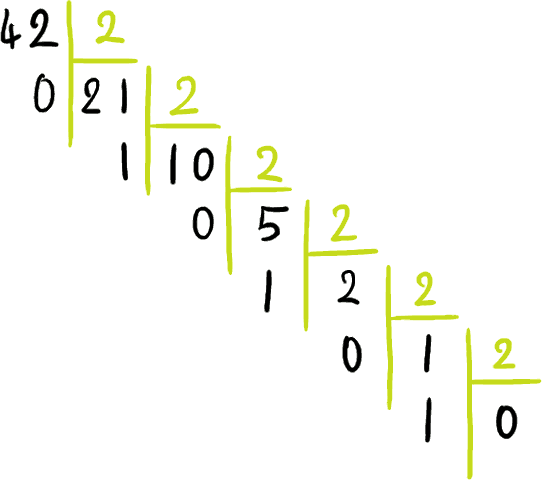

Si je vous demandais comment représenter le nombre quarante-deux, qu'écririez-vous ? Nous avons l'habitude du système décimal, ainsi la réponse attendue est 42. Dans la mémoire de votre ordinateur, cependant, une information ne peut être représentée que comme une séquence de 0 et de 1. Comment peut-on alors y stocker le nombre quarante-deux ?
Il faut pour cela savoir jongler entre les systèmes décimal et binaire, c'est-à-dire entre un système utilisant dix chiffres et un autre en utilisant deux. Nous verrons également comment passer du binaire à l'hexadécimal (base 16) et à l'octal (base 8) et inversement, ce qui est intéressant parce que ces systèmes permettent une écriture plus compacte. La base correspond au nombre de chiffres qu'utilise un système de numération.
Nous verrons ici des méthodes pratiques pour passer d'une base à l'autre et nous les mettrons en œuvre de façon algorithmique. Nous justifierons ces méthodes en énonçant des résultats mathématiques. Le tout est rédigé de sorte que les personnes uniquement intéressées par l'aspect pratique puissent sauter les autres passages sans être pénalisées.
Tout nombre entier b ≥ 2 peut être utilisé comme base pour représenter des nombres. Pour pouvoir écrire des nombres en base b, il faut avant tout trouver b symboles différents. Chacun représentera un nombre compris entre zéro et b - 1. Ces symboles sont appelés des chiffres.
Pour peu que vous sachiez à quel nombre correspond chaque symbole, vous pourrez connaître l'entier représenté par une écriture en base b. Toutefois, si vous voulez vous faire comprendre, il est préférable d'utiliser les chiffres conventionnels, à savoir :
en base 2, dans cet ordre, 0 et 1 ;
en base 8, dans cet ordre, 0, 1, 2, 3, 4, 5, 6 et 7 ;
en base 10, dans cet ordre, 0, 1, 2, 3, 4, 5, 6, 7, 8 et 9 ;
en base 16, dans cet ordre, 0, 1, 2, 3, 4, 5, 6, 7, 8, 9, A, B, C, D, E et F (A pour dix, B pour onze, C pour douze, etc.).
On voit un premier problème apparaître : si les bases ont des chiffres communs, comment savoir en quel base est écrit un nombre ? Quand vous écrivez dans une base autre que la base 10, il est important de bien le préciser, par exemple en l'indiquant en indice : 101010_2 = 52_8 = 42_{10} = 2A_{16}.
Avant d'écrire des algorithmes
En prévision des futurs algorithmes de conversion que nous étudierons, nous allons avoir besoin de deux fonctions que je vous invite à écrire dans votre langage préféré :
chiffre(n) prendra en argument un nombre entier et retournera le chiffre qui lui est associé sous forme de caractère ;
nombre(ch) prendra en argument un chiffre sous forme de caractère et retournera le nombre qui lui est associé.
Le résultat attendu est le suivant :
>>> chiffre(12)
'C'
>>> nombre('C')
12
Exemple en Python :
# cette définition permet d'utiliser des bases b ≤ 36
# rajouter des symboles si besoin
CHIFFRES = "0123456789ABCDEFGHIJKLMNOPQRSTUVWXYZ"
NOMBRES = {c : n for (n, c) in enumerate(CHIFFRES)}
def chiffre(n):
return CHIFFRES[n]
def nombre(ch):
return NOMBRES[ch]
Pour calculer l'entier représenté par une telle écriture, plaçons nous en base b : nous avons b chiffres représentant chacun un nombre entre 0 et b - 1. La notation n = (c_p ... c_0)_b où les c_i sont des chiffres est en fait un raccourci signifiant n = n_p b^p + \dots + n_2 b^2 + n_1 b + n_0 = \sum_{i = 0}^p n_i b^i où n_i est le nombre représenté par le chiffre c_i.
Pour mieux comprendre, revenons au nombre quarante-deux. Pour utiliser l'écriture binaire, nous allons avoir besoin des puissances de deux : \begin{matrix} 2^0 = 1 & 2^1 = 2 & 2^2 = 4 & 2^3 = 8 & 2^4 = 16 & 2^5 = 32 & 2^6 = 64 & 2^7 = 128 & 2^8 = 256 & \dots \end{matrix}
Vérifions que 101010_2 = 52_8 = 42_{10} = 2A_{16} :
42_{10} = 4 imes 10 + 2 = 42 donc 42 est bien l'écriture décimale de quarante-deux ;
Ça y est, nous savons calculer un nombre connaissant son écriture binaire, voire octale ou hexadécimale !
Première application algorithmique
Pour vérifier que vous avez bien compris, essayez d'écrire dans votre langage préféré une fonction lire_repr(rep, b) qui prenne en argument une chaîne de caractères représentant un nombre écrit en en base b ainsi que la base en question et qui retourne ce nombre sous la forme d'un entier. Vous utiliserez la fonction nombre(ch) précédemment définie.
Le résultat attendu est le suivant :
>>> lire_repr("2A", 16)
42
Exemple en Python :
def lire_repr(rep, b):
nb_chiff = len(rep)
somme = 0
b_puiss_i = 1
for i in range(nb_chiff):
c_i = rep[nb_chiff - i - 1]
somme = somme + nombre(c_i) * b_puiss_i
b_puiss_i = b_puiss_i * b
return somme
On calcule la somme terme par terme. Quelques commentaires :
l'appel len(rep) retourne la longueur de la chaîne ;
on utilise une boucle faisant évoluer trois variables :
i qui varie de 0 à nb_chiff - 1 ;
somme qui contient la somme des termes que l'on a calculés jusqu'ici ;
b_puiss_i qui est égal à b^i ;
il faut faire attention aux indices comme le montre la ligne surlignée.
Dans la plupart des langages, cette fonction est disponible dans la bibliothèque standard et/ou des notations permettent de rentrer directement des nombres en hexadécimal et/ou en octal et/ou en binaire. Renseignez-vous sur le vôtre. Dans le cas de Python :
Notre calcul revient à calculer la valeur du polynôme n = n_p X^p + \dots + n_2 X^2 + n_1 X + n_0 = \sum_{i = 0}^p n_i X^i au point b. Pour le faire plus efficacement, on peut appliquer la méthode dite de Horner, comme suit.
Prenons n = n_p b^p + n_{p-1} b^{p-1} + \dots + n_1 b + n_0.
On peut l'écrire sous la forme n = (( \dots ((n_p b + n_{p-1}) b + n_{p-2}) b + \dots) b + n_1) b + n_0.
En faisant les calculs dans cet ordre, on obtient n sans avoir à calculer les puissances de b.
Par exemple 101010_2 = ((((1 imes 2 + 0) imes 2 + 1) imes 2 + 0) imes 2 + 1) imes 2 + 0 = 42 avec un simple calcul mental.
Nouvelle application algorithmique
Cette méthode est très intéressante d'un point de vue algorithmique parce qu'elle simplifie considérablement notre code. Essayez de réécrire la fonction lire_repr(rep, b) dans votre langage préféré en appliquant la méthode de Horner.
Exemple en Python :
def lire_repr(rep, b):
n = 0
for ch in rep:
n = n * b + nombre(ch)
return n
On parcourt la chaîne caractère par caractère en faisant évoluer un nombre n. Après la lecture du premier caractère n sera égal au nombre représenté par ce caractère, c'est bien ce que l'on veut donc l'initialisation de n à zéro convient.
Le résultat mathématique fondamental qui permet de justifier notre écriture est le suivant :
Citation : Représentation en base b
Fixons un nombre entier b ≥ 2 qu'on appellera base (b = 2, 8, 10 ou 16 en pratique). Alors tout nombre entier n > 0 peut se décomposer dans cette base : il existe une unique famille de nombres entiers n_0, \dots, n_p tels que n = n_p b^p + \dots + n_2 b^2 + n_1 b + n_0 = \sum_{i=0}^p{n_i b^i} avec 0 \le n_i \le b - 1 pour tout i et n_p e 0. On écrit ce nombre n = (c_p \dots c_0)_b où c_i est le chiffre représentant le nombre n_i en base b.
Ouf ! Nous pouvons donc utiliser notre système sans problème. Deux informations primordiales se cachent dans cet énoncé :
tout entier a une écriture en base b ;
il y a unicité d'une telle écriture.
Quelques commentaires :
le nombre zéro est un cas particulier qui n'est pas concerné par ce résultat, on le note 0 dans toutes les bases ;
la condition 0 \le n_i \le b - 1 signifie que chaque n_i peut être représenté par un chiffre en base b ;
la condition n_p e 0 signifie que le chiffre le plus à gauche n'est pas 0, ce qui est nécessaire pour assurer l'unicité de la décomposition car 42_{10} = 042_{10} = 0042_{10} ;
en binaire, le chiffre c_i est appelé bit de poids i (bit : contraction de binary digit, c'est-à-dire chiffre binaire en anglais) ;
on parle de bit de poids fort ou MSB (Most Significant Bit) pour désigner le bit de poids maximal, ici c_p ;
on parle de bit de poids faible ou LSB (Least Significant Bit) pour désigner le bit de poids minimal, ici c_0.
Tout le problème est maintenant de savoir comment calculer les n_i à partir du nombre n pour en déduire les c_i. Comme il y a unicité de la décomposition, il suffit d'en trouver une qui convient. Nous verrons deux méthodes pratiques pour y arriver.
Nombre de nombres à q chiffres
Un autre résultat intéressant est le suivant :
Citation : Nombre de nombres à q chiffres
On peut écrire b^q nombres à q chiffres en base b, les chiffres de poids fort étant éventuellement nuls. Ce sont les nombres de 0 à b^q - 1.
Autrement dit en base 2 :
avec trois bits, on peut écrire les nombres de 0 à 7, il y en a 8 ;
avec quatre bits, on peut écrire les nombres de 0 à 15, il y en a 16 ;
avec un octet, c'est-à-dire huit bits, on peut écrire les nombres de 0 à 255, il y en a 256.
Pour cette méthode, nous allons utiliser la division euclidienne.
Citation : Division euclidienne de a par b
Soit a ≥ 0 et b > 0. Alors il existe un unique quotient q ≥ 0 et un unique reste r ≥ 0 avec r < b tels que a = b q + r.
Trois choses importantes cette fois : l'existence, l'unicité et le fait que r soit strictement inférieur à b.
Prenons un nombre n. Nous savons qu'il s'écrit n = n_p b^p + \dots + n_2 b^2 + n_1 b + n_0 = \sum_{i=0}^p{n_i b^i} avec 0 \le n_i \le b - 1 pour tout i et n_p e 0. Nous voulons déterminer les n_i.
En factorisant par b, on obtient n = b (n_p b^{p-1} + \dots + n_2 b + n_1) + n_0. Posons q = n_p b^{p-1} + \dots + n_2 b + n_1 = \sum_{i=1}^{p}{n_i b^{i-1}}} et r = n_0. En remplaçant, on a n = bq + r avec r < b !
Ainsi par unicité de la division euclidienne de n par b
le reste de cette division est r = n_0 ;
le quotient est q = n_p b^{p-1} + \dots + n_2 b + n_1 = \sum_{i=1}^{p}{n_i b^{i-1}}} = \sum_{i=0}^{p-1}{n_{i+1} b^i}}}.
Ce quotient est un nombre comme un autre, nous pouvons le décomposer dans la base b.
Mieux encore, nous connaissons déjà son écriture en base b ! En effet, on peut écrire que q = n'_{p-1} b^{p-1} + \dots + n'_1 b + n'_0 = \sum_{i=0}^{p-1}{n'_i b^i}}} en posant n'_i = n_{i+1}. Autrement dit, si n = (c_p \dots c_0)_b alors q = (c_p \dots c_1)_b et r = (c_0)_b où q et r sont respectivement le quotient et le reste de la division euclidienne de n par b.
Application pratique
Méthode générale
Si vous ne savez pas (ou plus :-° ) comment faire une division euclidienne, je vous invite à consulter ce lien, vous en aurez besoin.
Prenons un nombre n s'écrivant n = (c_p \dots c_0)_b en base b.
On peut alors montrer qu'en divisant n par b
le reste est r = (c_0)_b = n_0
le quotient est q = (c_p \dots c_1)_b, donc en divisant ce quotient par b
le reste est r' = (c_1)_b = n_1
le quotient est q' = (c_p \dots c_2)_b, donc en divisant ce quotient par b
le reste est r'' = (c_2)_b = n_2
le quotient est q'' = (c_p \dots c_3)_b, donc en divisant ce quotient par b
…
En divisant à chaque fois le quotient précédent par b, on obtient petit à petit les n_i, ce sont les restes des divisions successives. Il reste un point à préciser : quand doit-on s'arrêter ? En effet, on ne peut pas savoir à l'avance combien de fois nous allons devoir répéter le processus car le paramètre p est un nombre inconnu.
Puisque b^p \le n < b^{p+1}, p est la partie entière de log_b(n) = \frac{ln(n)}{ln(b)}, mais cette formule est inutile ici.
En fait, comme la condition (c_p)_b = n_p e 0 est imposée, on aura toujours un quotient strictement positif sauf pour la toute dernière division, pour laquelle on obtiendra r = (c_p)_b = n_p et q = 0. Il faut donc s'arrêter dès que l'on obtient un quotient nul !
En décimal
Pour bien voir que cette méthode fonctionne, commençons par chercher l'écriture décimale de quarante-deux.
Si on divise quarante-deux par dix
le reste est r = 2 = (c_0) donc le dernier chiffre sera un 2
le quotient est q = 4, et en divisant ce quotient par dix
le reste est r' = 4 = (c_1) donc l'avant-dernier chiffre sera un 4
le quotient est q' = 0, on s'arrête.
On obtient (et heureusement !) que quarante-deux s'écrit 42 en base 10 !
En binaire
Voilà qui est plus intéressant : nous allons pouvoir écrire un nombre sous forme binaire.
Si on divise quarante-deux par deux
le reste est r = 0 = (c_0) donc le dernier chiffre sera un 0
le quotient est q = 21, et en divisant ce quotient par deux
le reste est r' = 1 = (c_1) donc l'avant-dernier chiffre sera un 1
le quotient est q' = 10, et en divisant ce quotient par deux
le reste est r'' = 0 = (c_2)
le quotient est q'' = 5, et en divisant ce quotient par deux
le reste est r_3 = 1 = (c_3)
le quotient est q_3 = 2, et en divisant ce quotient par deux
le reste est r_4 = 0 = (c_4) donc l'avant-dernier chiffre sera un 1
le quotient est q_4 = 1, et en divisant ce quotient par deux
le reste est r_5 = 1 = (c_5) donc l'avant-dernier chiffre sera un 1
le quotient est q_5 = 0, on s'arrête.
En mettant les chiffres dans le bon ordre, on obtient bien que quarante-deux s'écrit 101010 en binaire.
Pour ne pas s'y perdre, une méthode élégante est d'adopter une structure en cascade comme le montre l'image suivante :

Cette méthode a l'avantage d'être simple, puisque la division par deux est facile à réaliser, mais elle nécessite de nombreux calculs car les plus petits nombres s'écrivent déjà avec beaucoup de chiffres en binaire. C'est pourquoi il peut être plus avantageux de commencer par écrire le nombre en hexadécimal ou en octal puis d'en déduire l'écriture binaire, ce qui se fait très simplement comme nous le verrons plus loin.
Application algorithmique
Cette méthode est algorithmique, nous pouvons donc en faire un programme. Essayez d'écrire dans votre langage préféré une fonction repr_nombre(n, b) prenant en entrée un nombre entier et une base, et retournant une chaîne de caractères représentant le nombre en question dans la base voulue. Cette fonction utilisera la fonction chiffre(n) précédemment définie.
Le résultat attendu est le suivant :
>>> repr_nombre(42, 16)
'2A'
Exemple en Python :
def repr_nombre(n, b):
rep = ""
q = n
while q != 0:
r = q % b
rep = chiffre(r) + rep
q = q // b
if rep == "":
return chiffre(0)
else:
return rep
On calcule les quotients et les restes successifs en remplissant au fur et à mesure la chaîne représentative du nombre. Quelques commentaires :
on utilise une boucle faisant évoluer deux paramètres :
la chaîne contenant les chiffres qu'on a déjà calculés ;
le quotient q ;
on s'arrête quand q est nul ;
le nombre zéro est un cas particulier à traiter séparément.
Le codage par soustractions successives est une méthode pratique simple : on soustrait à chaque fois la puissance de b inférieure la plus proche, jusqu'à obtenir zéro. En regroupant les termes que l'on a soustrait, on obtient les n_i.
Cette méthode permet d'écrire rapidement un nombre en base 2, notamment quand celui-ci a beaucoup de zéros dans son écriture binaire. Elle nécessite cependant une connaissance exacte des puissances de b, ce qui explique qu'on l'utilise peu pour les autres bases : les puissances de 2 sont simples à retenir, celles de 8 et de 16 le sont moins.
En décimal
Comment écrire quarante-deux en décimal ? La puissance de 10 inférieure la plus proche est 10, on peut la soustraire quatre fois et il reste deux. Donc 42 = 4 imes 10 + 2 = 42_{10}, c'est bien l'écriture décimale de quarante-deux.
En binaire
Restons fidèles au nombre quarante-deux. La puissance de 2 inférieure la plus proche est 32, on peut la soustraire une fois et il reste 10. Maintenant la puissance inférieure la plus proche est 8, on peut la soustraire une fois et il reste 2, qui est une puissance de 2. Donc 42 = 32 + 8 + 2 = 1 imes 2 ^ 5 + 0 imes 2^4 + 1 imes 2^3 + 0 imes 2^2 + 1 imes 2 + 0 = 101010_2.
Nous savons maintenant comment lire et écrire une représentation en base b. Ainsi si nous voulions déduire la représentation binaire d'un nombre de sa représentation hexadécimale, nous pourrions commencer par calculer le nombre puis l'écrire en binaire. En fait, l'étape de calcul est inutile parce qu'il existe une astuce pour passer directement du binaire à l'hexadécimal ou à l'octal et inversement.
Binaire et hexadécimal
Approche mathématique
Prenons un nombre et décomposons-le dans les bases 2 et 16 :
n = b_p 2^p + \dots + b_2 2^2 + b_1 2 + b_0 = \sum_{i = 0}^p{b_i 2^i} avec b_i = 0 ou 1 pour tout i et b_p e 0 ;
n = h_q {16}^q + \dots + h_2 {16}^2 + h_1 16 + h_0 = \sum_{j = 0}^q{h_j 16^j} avec 0 \le h_j \le 15 pour tout j et h_q e 0.
Comme 2^4 = 16 on peut écrire que n = h_q 2^{4q} + \dots + h_2 2^8 + h_1 2^4 + h_0 = \sum_{j = 0}^q{h_j 2^{4j}}. Or les nombres de 0 à 15 s'écrivent sur 4 bits au plus, donc chaque h_j s'écrit en binaire : h_j = h_{j_3} 2^3 + h_{j_2} 2^2 + h_{j_1} 2 + h_{j_0} avec h_{j_k} = 0 ou 1 pour tout j et pour tout k.
Autrement dit, les chiffres binaires correspondent aux représentations binaires des chiffres hexadécimaux.
Application pratique
Prenons un nombre écrit en binaire n = (c_p \dots c_0)_2 et complétons-le avec des zéros à gauche jusqu'à obtenir un nombre de chiffres multiple de 4 : n = (c_{4q} \dots c_0)_2 avec 4q \ge p et c_i = 0 pour tout i > p.
On peut maintenant regrouper les chiffres binaires par groupes de 4 bits consécutifs. Chaque groupe correspond à un nombre entre 0 et 15, donc à un chiffre hexadécimal. Si on remplace chacun de ces groupes par l'écriture hexadécimale du nombre correspondant, on obtient l'écriture en base 16 du nombre binaire.
Revenons par exemple au nombre quarante-deux, qui s'écrit 101010_2 en binaire. En complétant par des zéros à gauche, on obtient 00101010_2. On voit apparaître deux groupes de 4 bits consécutifs : 0010_2 = 2_{16} et 1010_2 = A_{16}. En remplaçant chaque groupe par le chiffre hexadécimal correspondant, on obtient 2A_{16} qui est l'écriture hexadécimale de quarante-deux.
Réciproquement, considérons un nombre écrit en hexadécimal n = (c_p \dots c_0)_{16}. On obtient son écriture en base 2 en remplaçant chaque chiffre hexadécimal par le nombre écrit sur quatre bits correspondant.
Ainsi en remplaçant 2_{16} par 0010_2 et A_{16} par 1010_2 dans 2A_{16}, on obtient 00101010_2 et on peut retirer les zéros inutiles à gauche pour obtenir l'écriture binaire de quarante-deux.
Binaire et octal
En partant du fait que 2^3 = 8, on peut appliquer le même raisonnement que précédemment en regroupant cette fois par groupes de trois bits.
Partons de 101010_2. Ici nous n'avons pas besoin de compléter par des zéros à gauche car nous avons déjà un nombre de chiffres multiple de trois. Nous voyons deux groupes de trois bits apparaître : 101_2 = 5_8 et 010_2 = 2_8. En remplaçant nous obtenons 52_8 qui est l'écriture octale du nombre quarante-deux.
Réciproquement en partant de 52_8 et en remplaçant 5_8 par 101_2 et 2_8 par 010_2, on obtient 101010_2 qui est l'écriture binaire de quarante-deux.
Nous arrivons à la fin, j'espère que vous aurez appris des choses nouvelles !
Si vous voulez vous exercer, prenez une suite de quelques chiffres en base 8 et calculez le nombre qu'elle représente avec la méthode de Horner. Calculez la représentation binaire de ce nombre avec la méthode des soustractions successives, et vérifiez que vous obtenez le même résultat en passant directement de l'octal au binaire. Calculez enfin la représentation hexadécimale de ce même nombre avec la méthode des divisions successives et vérifiez que vous obtenez le même résultat en passant du binaire à l'hexadécimal.
Je remercie Iliyas pour l'image de la division en cascade ainsi que pour sa relecture attentive et ses conseils.